# library(posterior)
# options(pillar.neg = FALSE, pillar.subtle=FALSE, pillar.sigfig=2)
library(brms)
library(tidyverse)
# library(bayesplot)
# theme_set(bayesplot::theme_default(base_family = "sans"))
set1 <- RColorBrewer::brewer.pal(7, "Set1")Bayesian workflow: fake social contact data example
Bayesian workflow
negative binomial
social contact
Bayesian workflow
This post is my attempt to follow along a Bayesian Workflow by Gelman et al and create examples for better understanding. While my ultimate goal is to study infectious disease transmission using a dynamic model following a Bayesian workflow, I use a simpler statistical model for practice in this post. I also consulted a blog post by Michael Betancourt to create this post.
Regarding the definition of Bayesian workflow, Gelman et al. writes:
“… Bayesian inference is just the formulation and computation of conditional probability or probability densities, \(p(\theta|y) \propto p(\theta) p(y|\theta)\). Bayesian workflow includes the three steps of model building, inference, and model checking/improvement, along with the comparison of different models, not just for the purpose of model choice or model averaging but more importantly to better understand these models …”
Model building
Conceptual analysis
Let’s suppose that we measured how the number of contact a person makes varies.A prior study and other numerous studies showed that contact frequencies differ by age. And a significant fraction of contacts occur with household members and as such the contact frequencies will likely vary by household size. We sampled a group of people and followed them for some time (e.g., 1 week) and measured the number of contacts that a typical person makes in a day. We also collected variables such as age, sex, and household size.
There are three conceptual modelling approaches: descriptive, predictive and explanatory approaches as per the study by Shmueli. This study is best described as a descriptive study and does not directly aim at obtaining optimal predictive performance, but at capturing the data structure parsimoniously. For a descriptive model, interpretability, transportability and general usability are important criteria as described in the article.
Assuming that the number of contacts per day per person, \(y_i\), follows a negative binomial distribution, we can mathematically express our concepts in the following equations:
\[ y_i \sim \text{NB}(y_i|\mu_i,\phi)=\frac{\Gamma (y_i + \theta)}{\Gamma (\theta) y_i !}) \left(\frac{\mu_i}{\mu_i+\phi} \right)^y \left(\frac{\phi}{\mu_i+\phi} \right)^\phi \tag{1}\]
\[\text{log}(\mu_i)= \alpha + \beta_{\text{age}_i} + \beta_{\text{sex}_i} +\beta_{\text{hhsize}_i} \tag{2}\]
\(\mu_i\) and \(\phi\) represent the mean number of contacts per day for a person \(i\) and the shape parameter of the negative binomial distribution, respectively. \(\Gamma (\cdot)\) denotes a gamma function.
Implemetation
Load packages
Generate the fake data
We take the fake-data simulation approach, which can help us understand our data model and priors, what can be learned from an experiment, and the validity of the applied inference methods. Parameters of interest are the ratios of number of contacts per day (i.e., rate ratios or relative risks) by age, sex, and household size. Plugging Equation 2 into Equation 1 becomes our generative model.
# parameter values to be estimated
intercept_true <- 3 # base number of contacts
rr_age_true <- c(1.5, 0.6) # relative number of contacts by age (age0 = 1)
rr_hhsize_true <- c(2, 2.6) # relative number of contacts by household size (hhsize0 =1)
rr_sex_true <- c(1.2) # males have more frequent contacts, which is not modeled in model 1
shape_true <- 5 # shape parameter for the negative binomial distribution
set.seed(1220)
# 9 categories with >100 observations on average
d <- data.frame(age = sample(1:3, 1000, replace=T),
hhsize = sample(1:3, 1000, replace=T),
sex = sample(1:2, 1000, replace=T))
d$b_age <-
ifelse(d$age == 1, 1,
ifelse(d$age == 2, rr_age_true[1], rr_age_true[2])) # relative risk by age
d$b_hhsize <-
ifelse(d$hhsize == 1, 1,
ifelse(d$hhsize == 2, rr_hhsize_true[1], rr_hhsize_true[2])) # relative risk by household size
d$b_sex <- ifelse(d$sex == 1, 1, rr_sex_true) # relative risk by sex
# mean as a function of age and hhsize
a <- intercept_true
log_mu <- log(a) + log(d$b_age) + log(d$b_hhsize) + log(d$b_sex)
d$mu <- exp(log_mu)
d$age <- as.factor(d$age)
d$hhsize <- as.factor(d$hhsize)
d$sex <- as.factor(d$sex)
d$contacts <- rnbinom(nrow(d), mu=d$mu, size=shape_true) # size, aka, shape, dispersionHistogram, mean, and variance of the data
library(tidyverse)
d |>
ggplot(aes(x=contacts))+
geom_histogram(binwidth=1, fill=set1[2])+
theme_light()+
labs(x="Number of contacts per day per person", y="Frequency")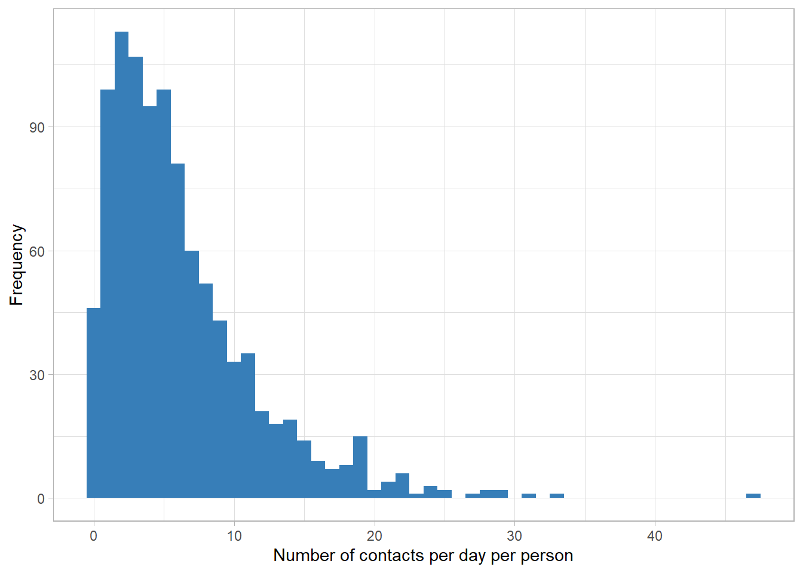
mean(d$contacts)[1] 6.252var(d$contacts)[1] 29.13964The number of contacts is count data and the variance-to-mean ratio is around 5. Thefore, the choice of negative binomial distribution looks reasonable.
Model 1: age and household size
For this model, we assume that the dependent variable is mostly influenced by age and household size and do not include sex variable in the model.
We use the brms package to implement the Bayesian regression model. We first set the priors for the intercept, a_*, the age and household size, b_*, and the shape parameter of the negative binomial distribution, shp_*.
# prior distributions
# intercept, modeled as normal
a_mean <- 0
a_scale <- 1.5 # exp(2*a_scale) will likely cover plausible values
# beta for the age and the household, modeled as normal
b_mean <- 0
b_scale <- 1.5
# shape parameter of the negbin distr, modeled as inverse gamma
shp_alpha <- 0.8 # 0.4 (brms default) causes divergent transitions,
shp_beta <- 0.3
my_priors <-
c(prior_string(paste0("normal(", a_mean, ",", a_scale,")"),
class = "Intercept"),
prior_string(paste0("normal(", b_mean, ",", b_scale,")"),
class = "b"),
prior_string(paste0("inv_gamma(", shp_alpha, ",", shp_beta,")"),
class="shape"))Prior predictive check
We use sample_prior = "only" argument to get the prior predictive distribution.
prior_pred <- brm(contacts ~ 1 + age + hhsize,
data = d,
family = negbinomial(),
prior = my_priors,
iter = 1e4, sample_prior = "only", cores = 4)
saveRDS(prior_pred, "prior_pred.rds")prior_pred <- readRDS("prior_pred.rds")
priorpc <- pp_check(prior_pred, type="bars", ndraws = 200)
priorpc$data |>
ggplot(aes(x=x))+
geom_col(aes(y=y_obs, fill="Data"))+
geom_point(aes(y=m, color="Prior"))+
geom_linerange(aes(ymax=h, ymin=l, color="Prior"))+
scale_x_continuous(limits=c(-1,30))+
labs(x="Number of contacts per day per person", y="Frequency")+
scale_color_manual("", values=c("Prior" = set1[3]))+
scale_fill_manual("", values=c("Data" = set1[2]))+
theme_bw()+
theme(legend.position=c(0.8,0.8))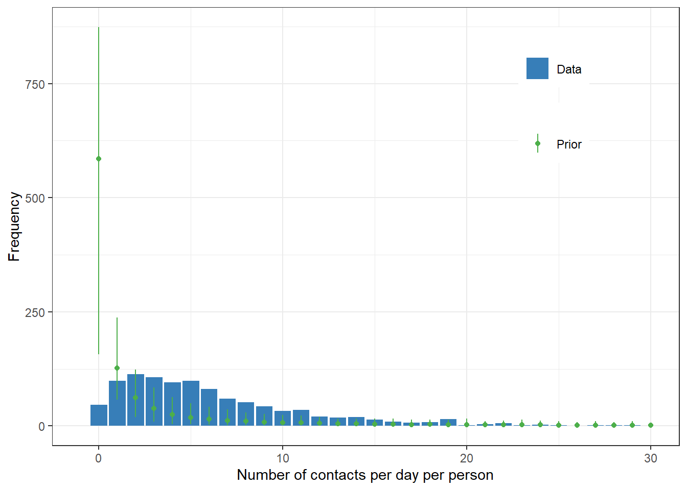
Fit the model
Gelman et al. writes:
” … The first step in validating computation is to check that the model actually finishes the fitting process in an acceptable time frame and the convergence diagnostics are reasonable. In the context of HMC, this is primarily the absence of divergent transitions, \(\hat{R}\) diagnostic near 1, and sufficient effective sample sizes for the central tendency, the tail quantiles, and the energy (Vehtari et al., 2020). …”
fit1 <- brm(contacts ~ 1 + age + hhsize,
data = d,
family = negbinomial(),
prior = my_priors,
iter = 1e4, cores = 4)
saveRDS(fit1, "fit1.rds")brms package reports all the relevant information to check the fitting.
fit1 <- readRDS("fit1.rds")
summary(fit1) Family: negbinomial
Links: mu = log; shape = identity
Formula: contacts ~ 1 + age + hhsize
Data: d (Number of observations: 1000)
Draws: 4 chains, each with iter = 10000; warmup = 5000; thin = 1;
total post-warmup draws = 20000
Regression Coefficients:
Estimate Est.Error l-95% CI u-95% CI Rhat Bulk_ESS Tail_ESS
Intercept 1.13 0.05 1.03 1.23 1.00 18152 14753
age2 0.48 0.05 0.38 0.57 1.00 22583 16259
age3 -0.47 0.05 -0.57 -0.37 1.00 21570 15970
hhsize2 0.71 0.05 0.60 0.81 1.00 19003 15277
hhsize3 0.96 0.05 0.85 1.06 1.00 18962 15515
Further Distributional Parameters:
Estimate Est.Error l-95% CI u-95% CI Rhat Bulk_ESS Tail_ESS
shape 4.47 0.36 3.81 5.22 1.00 25673 14986
Draws were sampled using sampling(NUTS). For each parameter, Bulk_ESS
and Tail_ESS are effective sample size measures, and Rhat is the potential
scale reduction factor on split chains (at convergence, Rhat = 1).Posterior predictive values along with prior predictive values
prior_pred <- readRDS("prior_pred.rds")
priorpc <- pp_check(prior_pred, type="bars", ndraws = 200)
postpc <- pp_check(fit1, type="bars", ndraws = 200)
postpc$data |>
ggplot(aes(x=x))+
geom_col(aes(y=y_obs, fill="Data"))+
geom_point(data=priorpc$data, aes(y=m, color="Prior"))+
geom_linerange(data=priorpc$data,aes(ymax=h, ymin=l, color="Prior"))+
geom_point(aes(y=m, color="Posterior"))+
geom_linerange(aes(ymax=h, ymin=l, color="Posterior"))+
scale_x_continuous(limits=c(-1,30))+
labs(x="Number of contacts per day per person", y= "Frequency")+
scale_color_manual("", values=c("Prior"=set1[3],
"Posterior"=set1[4]))+
scale_fill_manual("", values=c("Data"=set1[2]))+
theme_bw()+
theme(legend.position=c(0.8,0.8))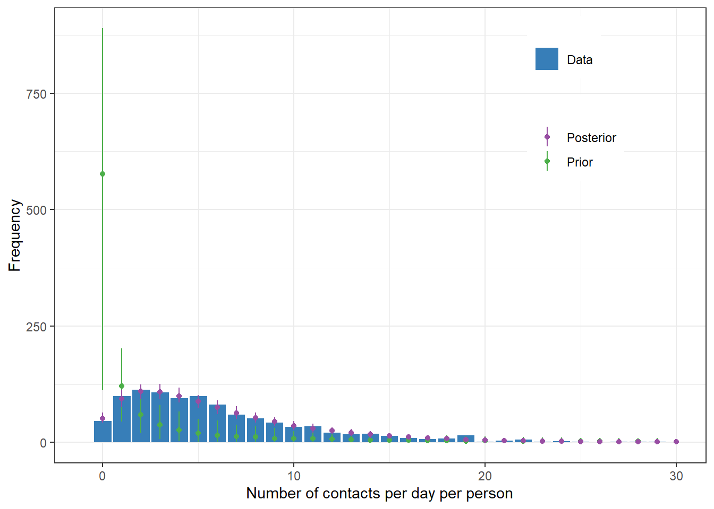
Inference
Prior and posterior distributions of parameters. Trace plots and histograms
plot(fit1, pars = "^b_")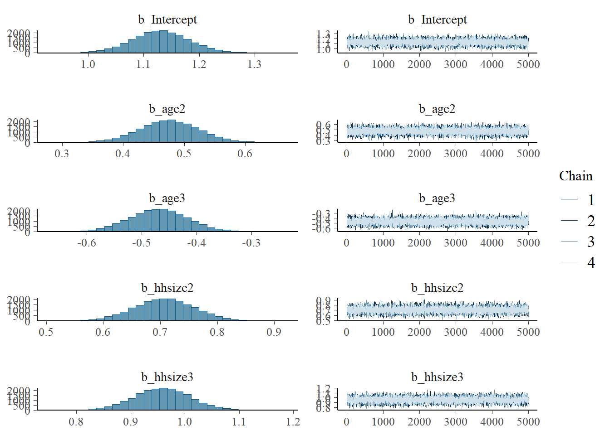
# plot(fit, pars = ".*age*.")
# plot(fit, pars = ".*hhsize*.")Correlations
pairs(fit1, pars = ".*age*.")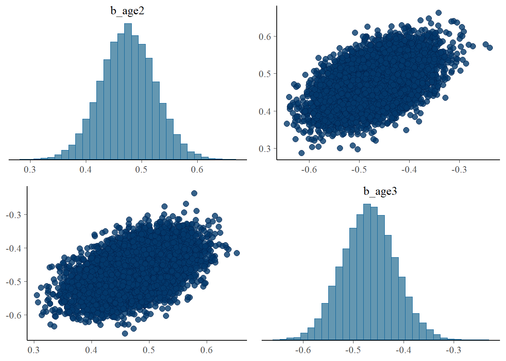
There is a positive correlation between b_age2 and b_age3. It appears that increase in one parameter creates a deviation from the specified distribution (negative binomial distribution) and the other parameter also increases for all predicted values conform to the specified distribution.
pairs(fit1, pars = "^b_age*.|^In*.")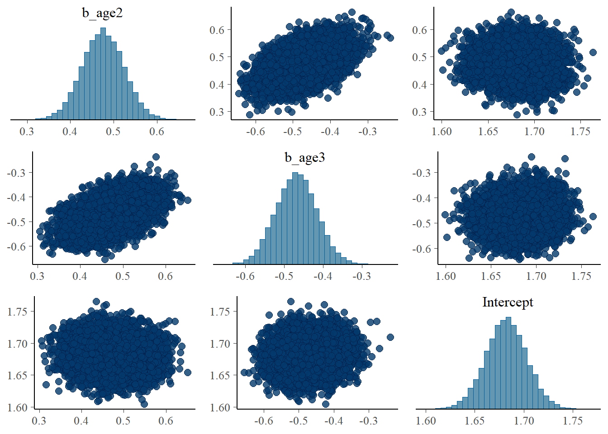
I also expected that the increase in those parameters (b_age2 and b_age3) lead to the decrease in the Intercept to maintain the mean. This is, however, only clear when examining the association among Intercept, b_hhsize2, and b_hhsize3.
pairs(fit1, pars = ".*hh*.")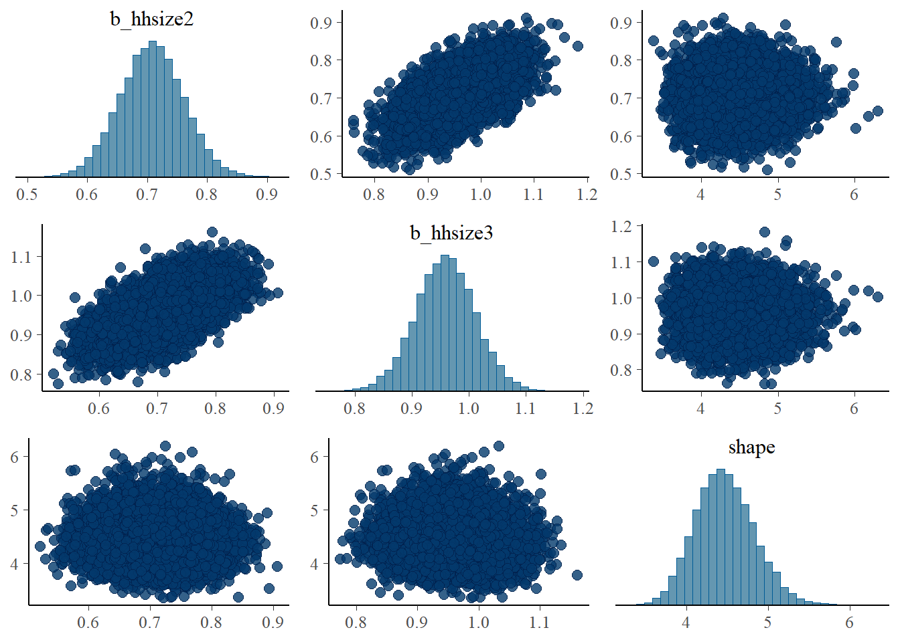
pairs(fit1, pars = "^b_hh*.|^In*.")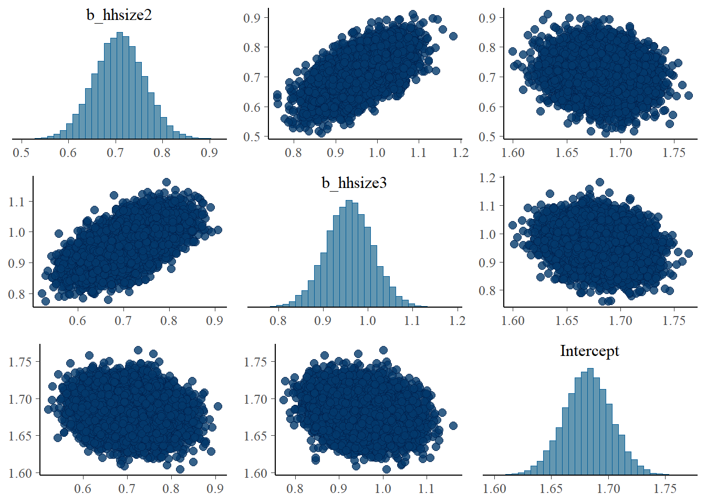
\(\beta_{\text{age}}\) parameter
df_post <- as.data.frame(fit1)
x <- seq(-2, 2, 0.01)
df <- data.frame(x=seq(-2, 2, 0.01))
df$prior_density <- dnorm(df$x, b_mean, b_scale)
plot(exp(x), dnorm(x, b_mean, b_scale), type="l", ylim=c(0, 20),
xlab="Value", ylab="Density", main=expression(beta[age]))
lines(density(exp(df_post$b_age2)), col=set1[2])
lines(density(exp(df_post$b_age3)), col=set1[3])
abline(v=rr_age_true, col=set1[1], lwd=1.2, lty="dotted")
legend("topright",
bty = "n",
lty=c(1,1,1,3),
col=c(1,set1[2],set1[3],set1[1]),
legend=c("Prior","age2","age3","True"),
inset=0.02)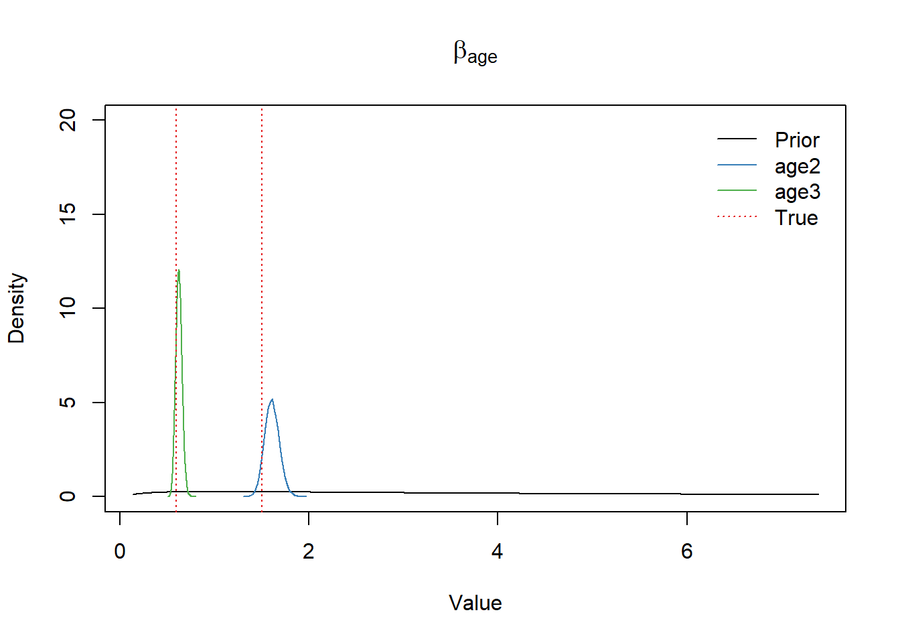
# ggplot2 way
# ggplot()+
# geom_line(data=df, aes(x=exp(x), y=prior_density, color="Prior"))+
# geom_density(data=df_post, aes(x=exp(b_age2), color="Posterior b_age2"))+
# geom_density(data=df_post, aes(x=exp(b_age3), color="Posterior b_age3"))+
# scale_color_manual(values=c("Prior"="forestgreen",
# "Posterior b_age2"="firebrick",
# "Posterior b_age3"="steelblue"))+
# labs(color="", x="value", y="density")+
# theme(legend.position="bottom")True \(\beta_{\text{age}}\) values were well retrieved.
\(\beta_{\text{hhsize}}\) parameter
plot(exp(x), dnorm(x, b_mean, b_scale), type="l", ylim=c(0,5),
xlab="Value", ylab="Density", main=expression(beta[hhsize]))
lines(density(exp(df_post$b_hhsize2)), col=set1[2])
lines(density(exp(df_post$b_hhsize3)), col=set1[3])
abline(v=rr_hhsize_true, col=set1[1], lwd=1.2, lty="dotted")
legend("topright",
bty = "n",
lty=c(1,1,1,3),
col=c(1, set1[2], set1[3], set1[1]),
legend=c("Prior", "hhsize2", "hhsize3", "True"),
inset=0.02)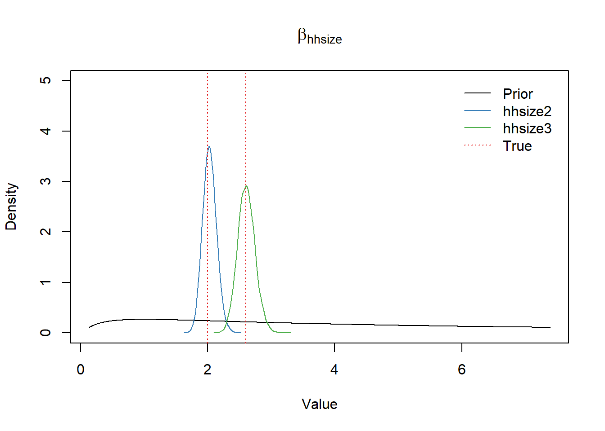
Intercept
x <- seq(-3,3,0.01)
plot(exp(x), dnorm(x, a_mean, a_scale), type="l", ylim=c(0,4),
xlab="Value", ylab="Density", main="Intercept")
lines(density(exp(df_post$b_Intercept)), col=set1[2])
abline(v=intercept_true, col=set1[1], lwd=1.2, lty="dotted")
legend("topright",
bty = "n",
lty=c(1,1,3),
col=c(1,set1[2],set1[1]),
legend=c("Prior", "Posterior", "True"),
inset=0.02)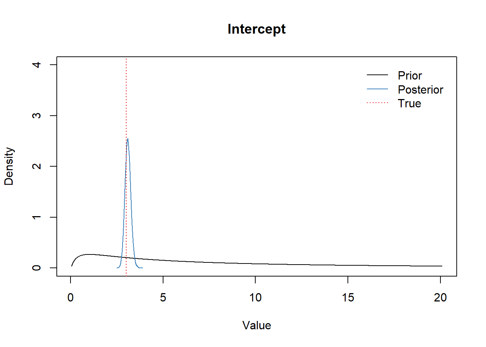
Shape parameter
library(extraDistr)
x <- seq(0,10,0.01)
plot(x, dinvgamma(x, shp_alpha, shp_beta), type="l",
ylim=c(0,2), xlab="Value", ylab="Density", main="Shape")
lines(density(df_post$shape), col=set1[2])
abline(v=shape_true, col=set1[1], lwd=1.2, lty="dotted")
legend("topright",
bty = "n",
lty=c(1,1,3),
col=c(1,set1[2],set1[1]),
legend=c("Prior", "Posterior", "True"),
inset=0.02)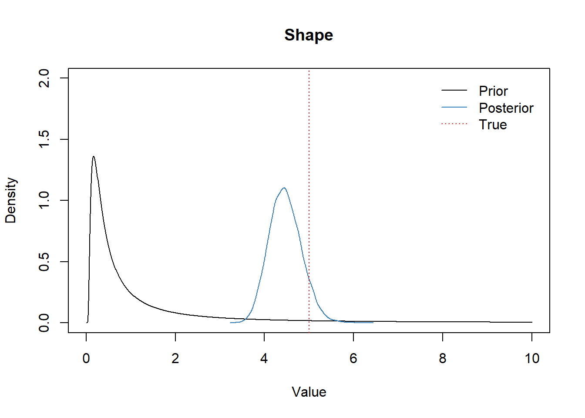
Model checking, improvement, and comparing multiple models
Gelman et al. writes:
“… The key aspect of Bayesian workflow, which takes it beyond Bayesian data analysis, is that we are fitting many models while working on a single problem. We are not talking here about model selection or model averaging but rather of the use of a series of fitted models to better understand each one. …”
Model evaluation
We use leave-one-out (LOO) cross validation as suggested in Vehtari et al. and Gelman et al..
We fit two additional models: fit2 and fit0. fit2 includes sex variable in addition to all variables included in fit1 and could be better or worse than fit1 as impact of sex is not big in the data set. fit0 is intercept-only model and thus is very likely to be worse than fit1 or fit2.
Model 2: Include sex in addition to age and household size as covariates.
fit2 <- brm(contacts ~ 1 + age + hhsize + sex,
data = d,
family = negbinomial(),
prior = my_priors,
iter = 1e4, cores = 4)
saveRDS(fit2, "fit2.rds")
fit0 <- brm(contacts ~ 1,
data = d,
family = negbinomial(),
prior = set_prior("normal(0,5)", class="Intercept"),
iter = 1e4, cores = 4)
saveRDS(fit0, "fit0.rds")Summary of fit0 and fit2
fit2 <- readRDS("fit2.rds")
fit0 <- readRDS("fit0.rds")
summary(fit2) Family: negbinomial
Links: mu = log; shape = identity
Formula: contacts ~ 1 + age + hhsize + sex
Data: d (Number of observations: 1000)
Draws: 4 chains, each with iter = 10000; warmup = 5000; thin = 1;
total post-warmup draws = 20000
Regression Coefficients:
Estimate Est.Error l-95% CI u-95% CI Rhat Bulk_ESS Tail_ESS
Intercept 1.05 0.05 0.94 1.16 1.00 21036 16258
age2 0.49 0.05 0.40 0.59 1.00 23875 16265
age3 -0.46 0.05 -0.57 -0.36 1.00 23032 15811
hhsize2 0.70 0.05 0.60 0.80 1.00 22731 15830
hhsize3 0.95 0.05 0.85 1.06 1.00 21280 16524
sex2 0.15 0.04 0.07 0.23 1.00 29050 14273
Further Distributional Parameters:
Estimate Est.Error l-95% CI u-95% CI Rhat Bulk_ESS Tail_ESS
shape 4.57 0.37 3.89 5.35 1.00 30332 14155
Draws were sampled using sampling(NUTS). For each parameter, Bulk_ESS
and Tail_ESS are effective sample size measures, and Rhat is the potential
scale reduction factor on split chains (at convergence, Rhat = 1).summary(fit0) Family: negbinomial
Links: mu = log; shape = identity
Formula: contacts ~ 1
Data: d (Number of observations: 1000)
Draws: 4 chains, each with iter = 10000; warmup = 5000; thin = 1;
total post-warmup draws = 20000
Regression Coefficients:
Estimate Est.Error l-95% CI u-95% CI Rhat Bulk_ESS Tail_ESS
Intercept 1.83 0.03 1.78 1.88 1.00 16643 12592
Further Distributional Parameters:
Estimate Est.Error l-95% CI u-95% CI Rhat Bulk_ESS Tail_ESS
shape 1.92 0.11 1.71 2.15 1.00 15701 13170
Draws were sampled using sampling(NUTS). For each parameter, Bulk_ESS
and Tail_ESS are effective sample size measures, and Rhat is the potential
scale reduction factor on split chains (at convergence, Rhat = 1).Shape parameter estimates
probs <- c(0.025, 0.25, 0.5, 0.75, 0.975)
shp1 <- quantile(as.matrix(fit1)[,"shape"], probs=probs)
shp2 <- quantile(as.matrix(fit2)[,"shape"], probs=probs)
shp0 <- quantile(as.matrix(fit0)[,"shape"], probs=probs)
df <- data.frame(Model = "Model 0", t(shp0))
df <- rbind(df, data.frame(Model = "Model 1", t(shp1)),
data.frame(Model = "Model 2", t(shp2)))
# df$percentile <- rep(as.character(100*probs),3)
ggplot(df, aes(x=Model))+
geom_linerange(aes(ymin=`X2.5.`, ymax=`X97.5.`))+
geom_linerange(aes(ymin=`X25.`, ymax=`X75.`), linewidth=1)+
geom_point(aes(x=Model, y=`X50.`))+
ggtitle("")+
theme_light() +
labs(y="Inference for the shape parameter", x="")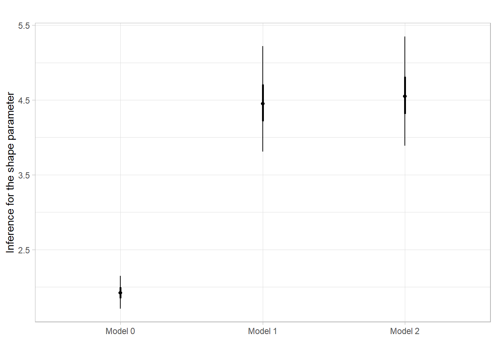
Compare fit0, fit1 and fit2 models
Using WAIC
fit1 <- add_criterion(fit1, "waic")
fit0 <- add_criterion(fit0, "waic")
fit2 <- add_criterion(fit2, "waic")
waic(fit0)
Computed from 20000 by 1000 log-likelihood matrix
Estimate SE
elpd_waic -2848.4 28.0
p_waic 2.1 0.2
waic 5696.7 56.0waic(fit1)
Computed from 20000 by 1000 log-likelihood matrix
Estimate SE
elpd_waic -2575.3 26.8
p_waic 5.8 0.4
waic 5150.5 53.7waic(fit2)
Computed from 20000 by 1000 log-likelihood matrix
Estimate SE
elpd_waic -2569.2 26.6
p_waic 6.6 0.4
waic 5138.4 53.1loo_compare(fit1, fit2, fit0, criterion = "waic") elpd_diff se_diff
fit2 0.0 0.0
fit1 -6.1 3.6
fit0 -279.2 19.9 Using leave-one-out (LOO) cross-validation
fit1 <- add_criterion(fit1, "loo")
fit0 <- add_criterion(fit0, "loo")
fit2 <- add_criterion(fit2, "loo")
loo_compare(fit1, fit2, fit0, criterion = "loo") elpd_diff se_diff
fit2 0.0 0.0
fit1 -6.1 3.6
fit0 -279.2 19.9 brms::loo_compare uses the loo::loo_compare under the hood and and loo::loo_compare package produces the same results.
library(loo)
loo_fit0 <- loo(fit0)
loo_fit1 <- loo(fit1)
loo_fit2 <- loo(fit2)
print(loo_fit0)
Computed from 20000 by 1000 log-likelihood matrix
Estimate SE
elpd_loo -2848.4 28.0
p_loo 2.1 0.2
looic 5696.7 56.0
------
Monte Carlo SE of elpd_loo is 0.0.
All Pareto k estimates are good (k < 0.5).
See help('pareto-k-diagnostic') for details.print(loo_fit1)
Computed from 20000 by 1000 log-likelihood matrix
Estimate SE
elpd_loo -2575.3 26.8
p_loo 5.8 0.4
looic 5150.5 53.7
------
Monte Carlo SE of elpd_loo is 0.0.
All Pareto k estimates are good (k < 0.5).
See help('pareto-k-diagnostic') for details.print(loo_fit2)
Computed from 20000 by 1000 log-likelihood matrix
Estimate SE
elpd_loo -2569.2 26.6
p_loo 6.6 0.4
looic 5138.4 53.1
------
Monte Carlo SE of elpd_loo is 0.0.
All Pareto k estimates are good (k < 0.5).
See help('pareto-k-diagnostic') for details.brms::loo_compare(loo_fit1, loo_fit2, loo_fit0) elpd_diff se_diff
fit2 0.0 0.0
fit1 -6.1 3.6
fit0 -279.2 19.9 It appears that fit2 is the most favored by LOO cross validation. This implies that adding sex variable still improves the model performance while its influence on the number of contacts relatively small compared to the age and household size.
summary(fit2) Family: negbinomial
Links: mu = log; shape = identity
Formula: contacts ~ 1 + age + hhsize + sex
Data: d (Number of observations: 1000)
Draws: 4 chains, each with iter = 10000; warmup = 5000; thin = 1;
total post-warmup draws = 20000
Regression Coefficients:
Estimate Est.Error l-95% CI u-95% CI Rhat Bulk_ESS Tail_ESS
Intercept 1.05 0.05 0.94 1.16 1.00 21036 16258
age2 0.49 0.05 0.40 0.59 1.00 23875 16265
age3 -0.46 0.05 -0.57 -0.36 1.00 23032 15811
hhsize2 0.70 0.05 0.60 0.80 1.00 22731 15830
hhsize3 0.95 0.05 0.85 1.06 1.00 21280 16524
sex2 0.15 0.04 0.07 0.23 1.00 29050 14273
Further Distributional Parameters:
Estimate Est.Error l-95% CI u-95% CI Rhat Bulk_ESS Tail_ESS
shape 4.57 0.37 3.89 5.35 1.00 30332 14155
Draws were sampled using sampling(NUTS). For each parameter, Bulk_ESS
and Tail_ESS are effective sample size measures, and Rhat is the potential
scale reduction factor on split chains (at convergence, Rhat = 1).